Welcome to Swift Look At Manual
Overview
Swift Look At is a custom LookAt animation node for Unreal Engine. It is similar to the built-in equivalent, but more accurately and naturally.
Features
- Keep the control target from rolling while rotating it to face the target, so it can behave more naturally.
- Contrary to the built-in equivalent, Swift Look At applying alpha first, then clamp the rotation, which ensures it is more accurate.
- Visual debugging information is very rich and intuitive, which is convenient for users to locate problems.
Executable Demo
- This is a side-by-side comparison demo.
- You can compare the Swift Look At and the Engine built-in equivalent before buy it.
- It exposes as many settings as possible to allow you have a complete comparison of the product. download Executable Comparison Demo
Showcase
Properties
| Property | Description |
|---|---|
| Bone to Modify | Name of bone to control. This is the main bone chain to modify from. |
| Look at Target | Target socket to look at. Used if LookAtBone is empty. - You can use LookAtLocation if you need offset from this point. That location will be used in their local space. |
| Use Look Up Axis | Whether or not to use Look up axis |
| Up Axis Locked | If useLookUpAxis is enabled, whether or not to lock the Up Axis. |
| Look Up Axis | If the Up Axis is used, System will try to rotate the bone around it until Forward Axis point to the desired point or be clamped. |
| Look at Clamp | Look at Clamp value in degrees - it will clamp the modified look at axis in a cone which aligns to the original forward axis direction. |
| Clamp Ratio | Clamp Ratio is the ratio of dimension in the pitch and yaw directions. |
| Approximate Clamp | Approximate Clamp is only effect when Use Up Axis is enabled and Up Axis Locked is disabled. It is a trade-off between performance and precision. |
| Interpolated | Whether or not interpolated. |
| Interpolation Speed | Change rate of the interpolated parameter. |
| Look at Target | Target socket to look at. Used if LookAtBone is empty. - You can use LookAtLocation if you need offset from this point. That location will be used in their local space. |
| Look at Location | Target Offset. It's in world space if LookAtBone is empty or it is based on LookAtBone or LookAtSocket in their local space |
| Show Bone Frame | Whether or not show the axes of the local coordinate system of Joint(Bone) |
| Show Original Lock at Axis | Whether or not show the orignal LookAt Axis. |
| Show Original Up Axis | Whether or not show the orignal Up Axis. |
| Show Modified Look at Axis | Whether or not show the modified LookAt Axis. |
| Show Modified Up Axis | Whether or not show the modified Up Axis. |
| Show Clamp Cone | Whether or not show the Clamp Cone. |
| Show Desired Target | Whether or not show desired target. |
Vedio Tutorial
Quick Start
In the following example, we will control Mannequin and make him look at the target we specified.
- We want Mannequin to have more natural motion, so we apply multiple nodes to his skeleton in a chain to approach this goal. Here we choose Spine01, Spine03 and Head.
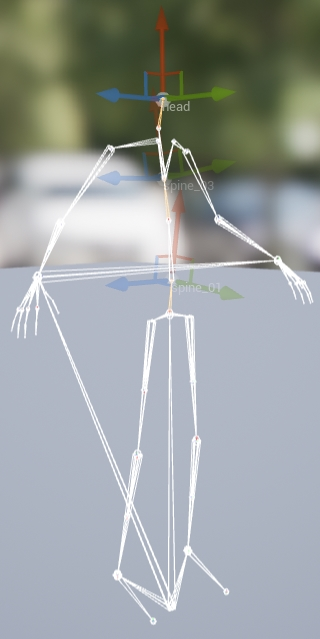
- Before we dive into it, let me introduce the basic idea behine the Swift Look At node. We can imagine it as a virtual fixture that clamps the target bone that we want to control. Then through calculation, we rotate the virtual fixture and in turn, the bone’s orientation is adjusted.
Ok, let’s get started. Firstly, we insert a Swift Look At node into an animation blueprint and set modified bone property with the Head bone.
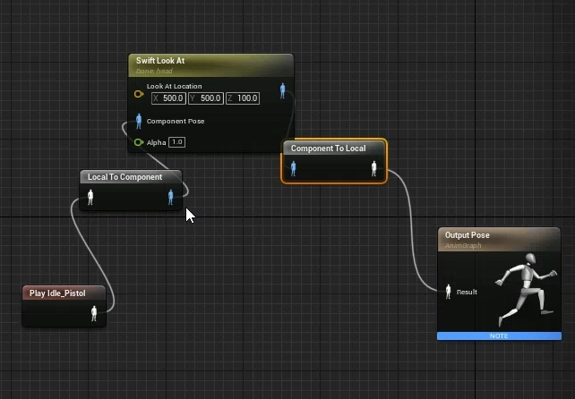
-
Then, we define the virtual fixture through the node’s Look At Axis and Look Up Axis. The Look At Axis is the forward direction of the virtual fixture, which we want to point the target in the final. The Look Up Axis is the up direction of the virtual fixture, which tries its best to keep the fixture from roll type rotation; it is optional.
We can open the Skeleton panel of the Persona to watch the Head bone’s coordinate system. You would see the green axis pointing along the forward direction of the face（R, G, B）-- (0, 1, 0), the red axis orienting to the up direction of the head(R, G, B) -- (1, 0, 0). So we set the node property Look At Axis to (0, 1, 0) and Look Up Axis to (1, 0, 0) and both of them are in local space.- Note:
We can set the Property Use Look Up Axis to tell the node whether or not to use Look Up Axis. If we use the Look Up Axis, we can tell the node whether or not to lock the Look Up Axis by setting the property Look Up Axis Locked. Built-in equivalent doesn’t provide this optional, this feature is one of several unique features Swift Look At provided. This feature allows you to use the Look Up Axis, but doesn’t force you to apply it, just uses it as a hint to avoid Roll type rotation.
- Note:
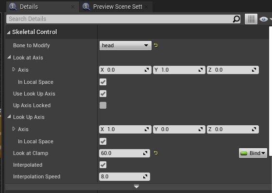
- Now, we will set the target position in world space. First we create a FVector type variable named LookAtTarget to represent the target position in the blueprint.
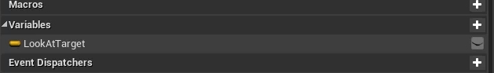
- Then we use this variable in the blueprint and connect it to Swift Look At node’s Look At Location pin.
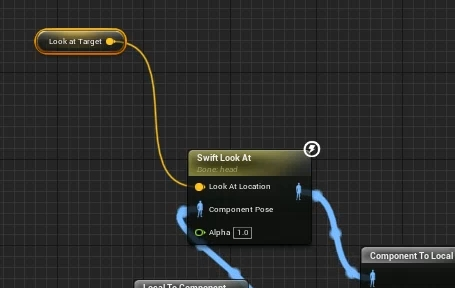
- Click the compile button of the blueprint and set the variable to (300, 300, 1000), because we want the character to look at the top-right direction related to his body.
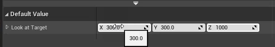
- We can enable the debug draw options to show the connected line between the modified bone and the looking at target and to show the modified Look At Axis in the meanwhile.
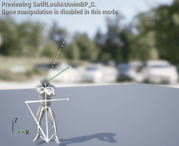
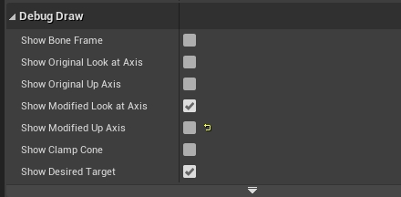
- We need to compile the blueprint again after changing it.
The results don't look exactly as expected. The character’s head tends to look at the target, but doesn’t point to it exactly. There are two possibilities for this to happen:- Rotation is out of allowed range, it is simply clamped.
- The property Alpha is too small to rotate the character enough.
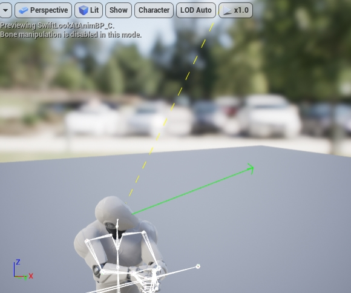
- We can figure out what happened by turning on the property named Show Clamp Cone.
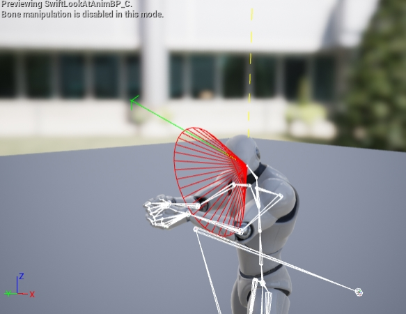
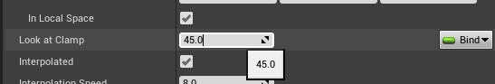
- Oh, the problem is the degree of rotation is out of range. So we can set a larger number for the property Look at Clamp and try it again.
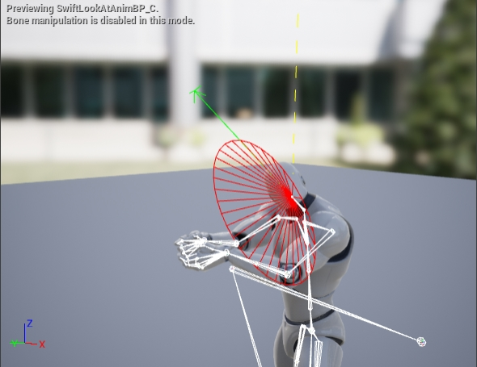
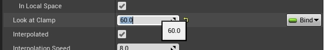
- Furthermore, we can set a totally large number to make the Look At Axis to exactly point the target like this.
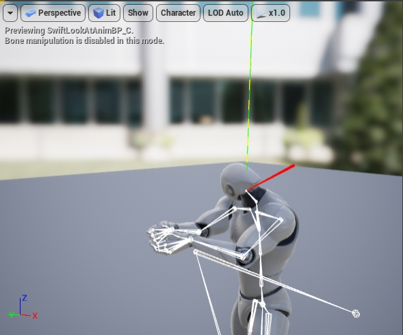
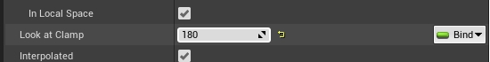
- We can also enable Show Original Look at Axis property to figure out how much degree of rotation applied on earth.
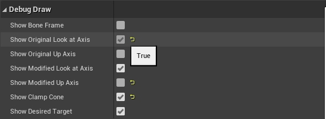
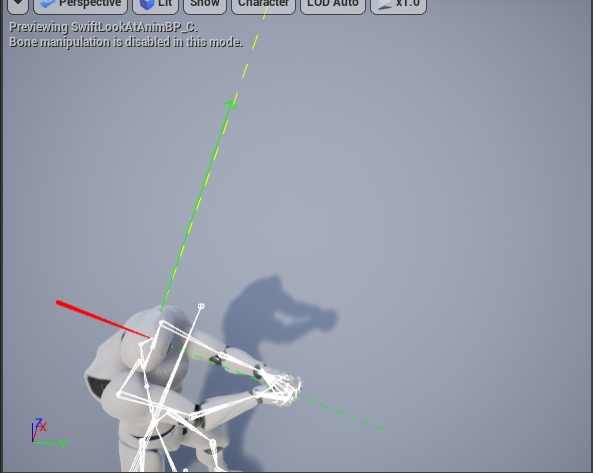
-
So we can determine the rotation changed according to the Alpha whether or not in our expectation.
Like this, when clamp is not applied to the rotation:- if we set Alpha to 0.2, the final rotation is original’s 20%;
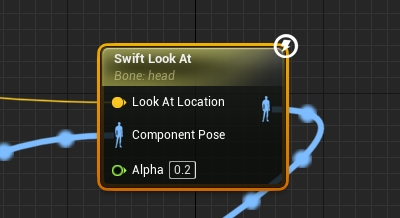
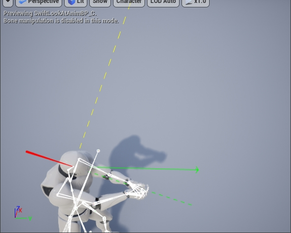
- if we set Alpha to 0.5, the final rotation is original’s 50%;
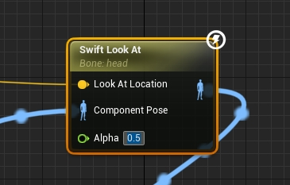
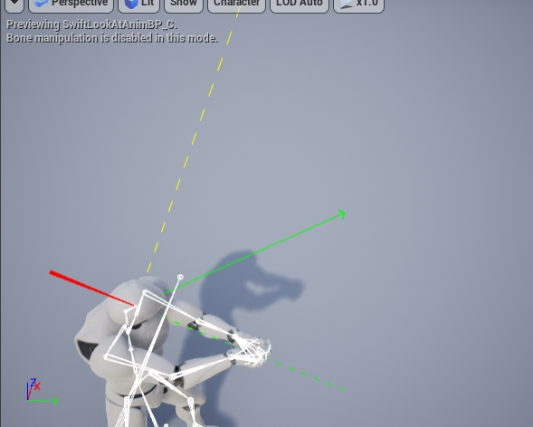
- if we set Alpha to 0.8, the final rotation is original’s 80%;
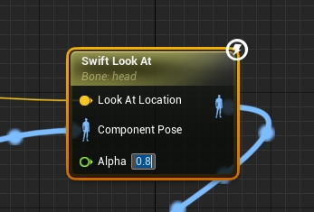
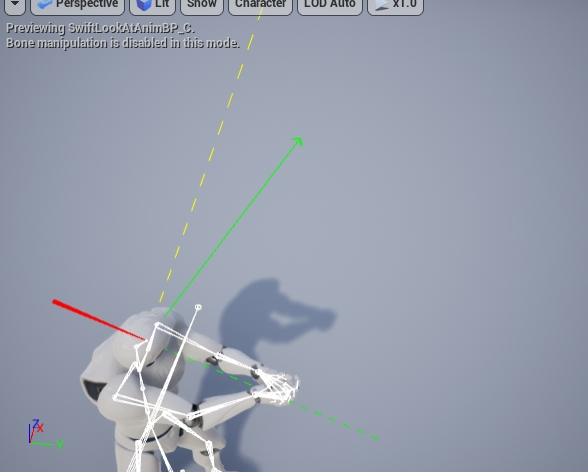
-
Besides debugging the Look At Axis, we can draw original and modified UpAxis and the coordinate system of modified bone if we enable the corresponding debug properties.
- Note: We’d better not enable too many debug draws, otherwise it will be too messy to get useful information.
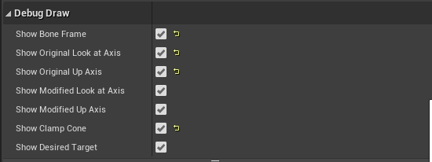
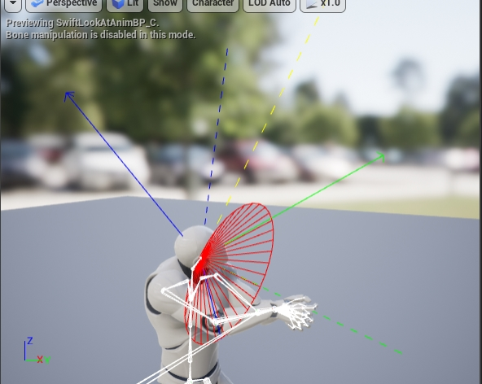
- We need to add two other nodes for Spine01 and Spine03 according to the method mentioned above. Pay attention, we need to apply control to the Spine01 first, then to the Spine03, final to the Head.
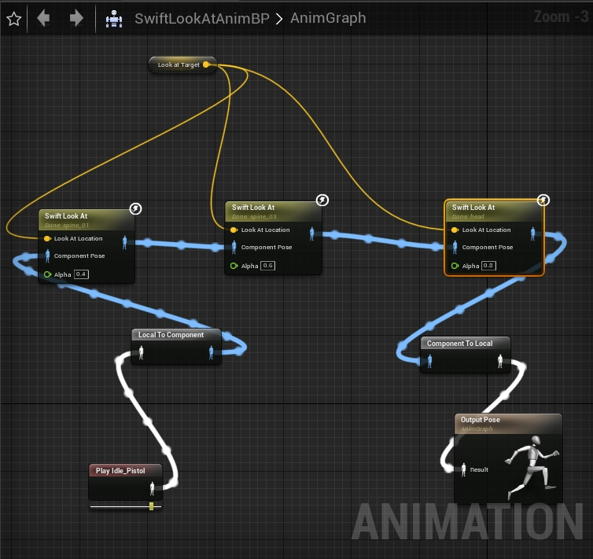
- This is the final result.
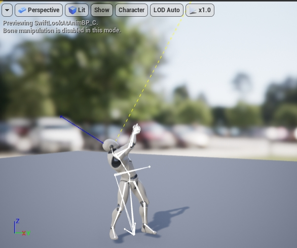
-
What does the property Approximate Clamp mean?
This property only works when we use the Look Up Axis and not to lock it. In this mode, clamping the rotation accurately will perform a lot of calculation, so we provide Approximate Clamp option which can achieve considerable accurate in most cases and recommend you use it.
Supplement
-
Supporting Non-Uniform Clamping (2021-08-31 v1.2)
This feature allow different clamping ranges in pitch and yaw directions. To achieve this, a property named Clamp Ratio is added. The clamping cone's bottom surface is an ellipse instead of a circle when this property is not equal to 1. It allows non-uniform clamping in different directions.
Special thanks to Levitikon217 for giving this valuable advice and explaining in detail why this feature is needed.
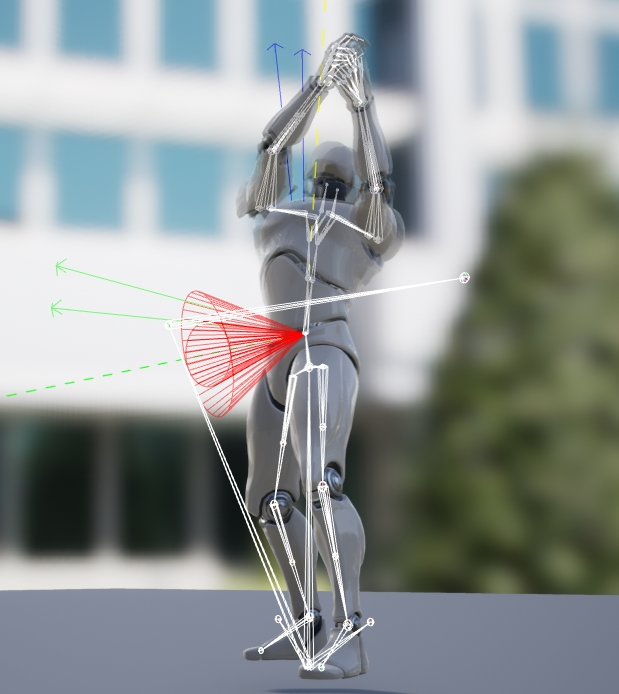
-
Demo project for Metahuman (2024-08-05)
This project demonstrates how to use the Swift Look At plugin in Metahuman.